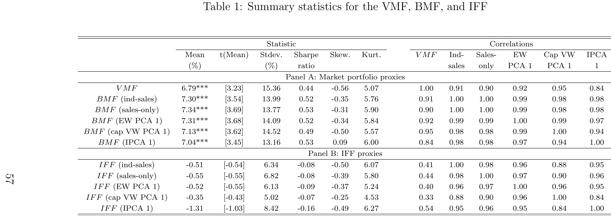
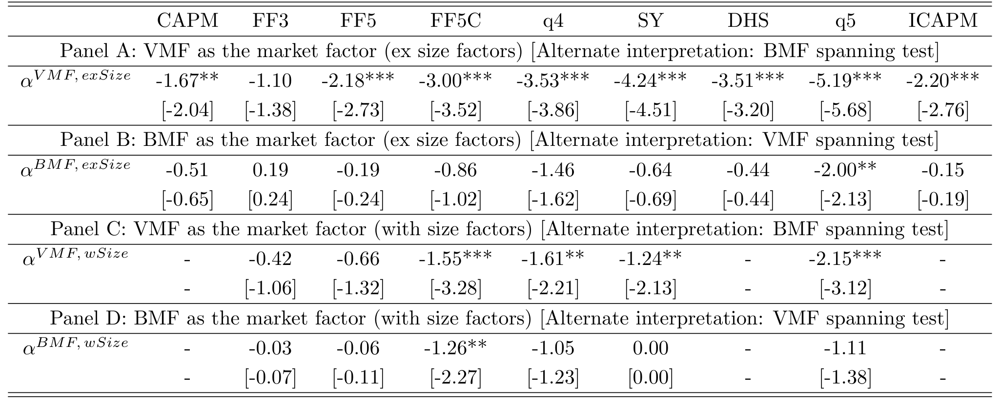
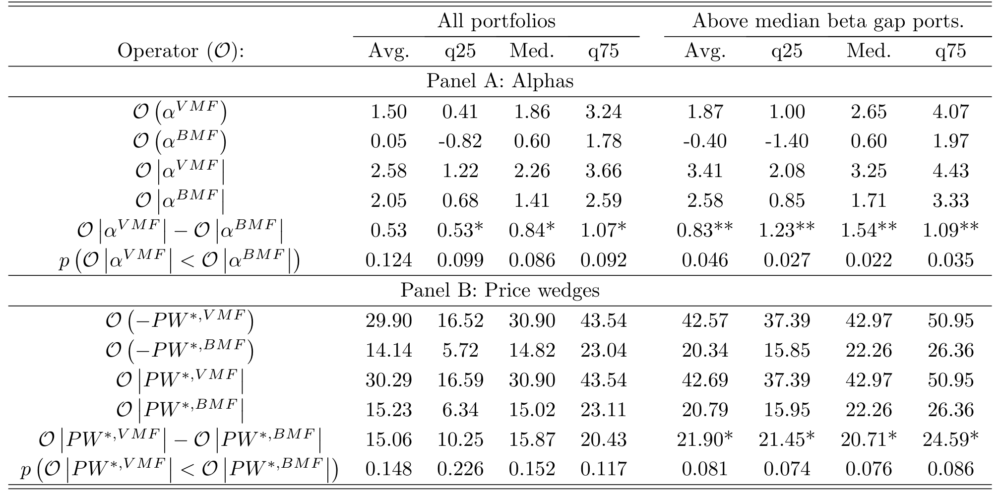
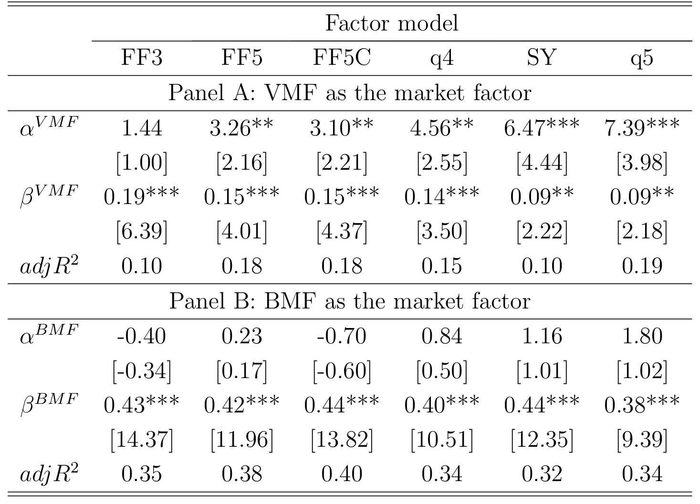
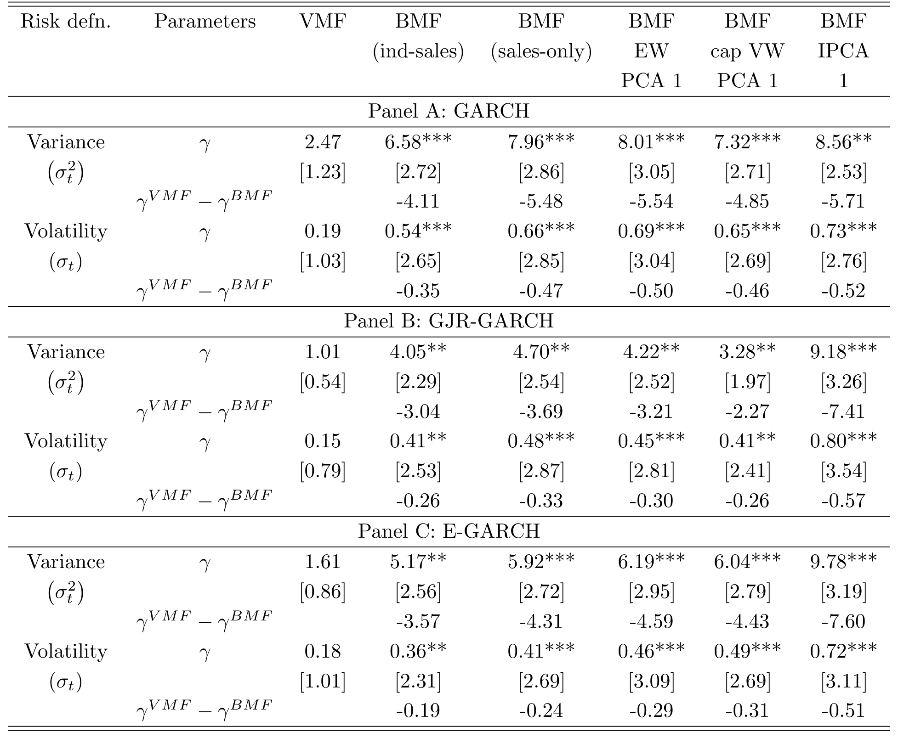
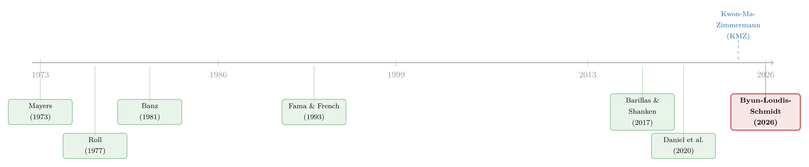

两种市场收益的故事：当「市场组合」其实只是一小撮巨头
这篇博客读的是 Byun、Loudis 与 Schmidt 的 A Tale of Two Market Returns。它的核心只有一句话：我们天天挂在嘴边的「市场组合」其实只是六百多万家美国企业里被高度筛选出来的四千家上市公司，这个样本被极少数巨头主导，因而混入了一个在全经济体层面会被分散掉、且不带任何风险溢价的成分——作者称之为「特质金融因子 (Idiosyncratic Financial Factor, IFF)」。把它从市场因子里剔除、换成覆盖所有公私企业的「广义市场因子 (Broad Market Factor, BMF)」，三个困扰资产定价几十年的「谜」竟然同时松动了：CAPM 系统性低估贴现率、规模异象、以及微弱的风险—收益关系。
1 引言：你用的那个「市场」，可能并不是市场
先抛出一个数字上的张力。美国大约有六百多万家企业，但公开上市的只有四千家左右（截至 2018 年）。更要命的是，能走完 IPO 这条路的公司从来不是随机抽样的结果——它偏爱大公司、偏爱高估值行业的公司；而即便在上市公司内部，规模分布也极度向头部倾斜。于是，我们用来代表「市场」的那个总市值加权指数，本质上是被一小撮被筛选过的、且彼此高度相关的巨头牵着走的。2020 年，CRSP 全样本里最大的五家公司就占了总市值的约 20%；2023 年底，「七巨头 (Magnificent Seven)」更是占到标普 500 的三成以上。
这件事其实并不新鲜。早在 Roll (1977) 的著名批判里就指出：真正的「市场组合」是不可观测的，我们手里的股票指数只是它的一个代理 (proxy)。半个世纪以来，文献处理这个问题的主流办法是做加法——往标准的总市值加权市场因子 (Value-weighted Market Factor, VMF) 里再补上人力资本、其他资产类别、家庭金融与非金融持仓等被遗漏的财富成分。
但这篇论文反其道而行之。它问的不是「VMF 漏掉了什么」，而是「VMF 里多塞了什么」。如果那一小撮被过度代表的巨头共同载荷 (load) 在某个因子上，而这个因子在「所有企业的总收益」层面会被分散干净，那么这部分成分根本就不该被定价。它混进 VMF，纯粹是一种污染。作者要做的，就是把这个污染识别出来、量化出来、再剔除掉，然后看世界会变成什么样。
这就是贯穿全文的那一个核心：VMF = 真正被定价的市场风险 (BMF) + 不被定价的噪音 (IFF)。本文接下来的一切——模型、构造方法、三个实证结果——都是围绕这一条等式展开的。
2 两个动机事实：上市公司不是经济体的缩影
要让上面的故事成立，第一步得先证明：上市公司的「构成」和整个经济体的「构成」确实对不上。作者给了两个事实。
首先，公开市场被极少数巨头主导。从 1926 到 2021 年，最大的五只股票常年占据总市值的 10%–25%；前 25 只的合计权重在 1980 年代低至约 20%、在 1930 年代高至近 50%。值得玩味的是，即便指数里纳入的股票数量后来急剧上升，这些头部份额几乎纹丝不动——集中度是结构性的，不是样本量的产物。
接着，一个自然的问题是：这种集中度是经济体本身的特征，还是仅仅是「只看上市公司」造成的错觉？作者用销售额 (sales) 作为所有企业（含私企）都可观测的规模指标来对照。结论很干净：在销售额这个口径上，上市公司平均只占全美企业总销售额的约 40%。把企业按规模分成十档，上市公司里最高一档贡献了 56% 的销售额、最低一档只有 2.0%；但放到全部企业里看，销售额份额却呈现一个 U 形——最低一档占 30%，最高一档占 29%。换句话说，小企业在真实经济里的分量，远比它们在公开股市里的身影要重得多。
这个「构成上的脱节」正是 IFF 的温床：上市公司这个被筛选过的子样本，可能载荷在一个只与「谁选择了上市」有关、却在更广义的财富口径里被分散掉的成分上。
3 一个核心：BMF 与 IFF
把上面的直觉写成定义。作者构造一个广义市场因子 BMF，让它去逼近所有企业（公开 + 私有）的价值加权权益收益；标准的 VMF 则只是上市公司的价值加权收益。两者之差，就是特质金融因子：
$$\text{IFF}_t \equiv \text{VMF}_t - \text{BMF}_t.$$
名字里的「特质 (idiosyncratic)」是相对宏观经济而言的：IFF 在金融市场里是个实实在在影响收益的因子，但它与投资者边际效用的各种宏观代理变量都不相关。它的时序均值小到统计上与零无异——年化仅 -0.51%，不显著。这是整篇论文的支点：一个真实存在、却不带风险溢价的因子。
4 理论模型：选择 + 差异化载荷，如何凭空造出一个 IFF
这是一篇带模型的论文，值得把机制一步步讲清楚。作者搭了一个静态代表性代理人模型，核心只有两个零件：选择性上市和对一个不定价因子的差异化载荷。
模型里有三种现金流风险，彼此独立：
$$f \sim N(0,\sigma_f^2),\quad g \sim N(0,\sigma_g^2),\quad z \sim N(0,\sigma_z^2),\quad f \perp g \perp z.$$
这里 \(f\) 是唯一驱动总股利不确定性的因子；而 \(g\) 与 \(z\) 只是在不同类型的企业之间重新分配现金流——它们不改变加总后的总量。企业被分成两类 \(\tau_i \in \{S, B\}\)（小、大），共 \(N = N_S + N_B\) 家，且 \(N_S > N_B\)。关键假设来自第 2 节的动机事实：小企业上市的概率低于大企业，即 \(p^{pub}_S < p^{pub}_B\)。
现在直觉就出来了。像 \(g\) 这样的「再分配」因子，在所有企业的加总收益（BMF）里会因为一增一减而被分散干净——它不影响总股利，自然不进入 BMF。但因为大企业在公开市场里被过度代表、又恰好对 \(g\) 有着与小企业不同的载荷，\(g\) 就没能在上市公司这个偏斜样本里被分散掉。于是 VMF 载荷在 \(g\) 上，BMF 不载荷——这个 VMF 与 BMF 之间的楔子 (wedge)，就是 IFF。而由于 \(g\) 在经济体层面不影响边际效用，它要么不被定价、要么只带一个极小（甚至轻微为负）的价格。这与实证里那个 -0.51% 的负而不显著的 IFF 溢价完全吻合。
一句话：选择性上市让一个本该被分散的因子留在了样本里，差异化载荷让大小企业在这个因子上分道扬镳，两者合力把不定价的风险塞进了 VMF。
5 真正关键的一步：私企收益看不见，BMF 怎么造出来？
模型讲得通，但实证上有个绕不过去的坎——私企的市值和收益根本观测不到。这是整篇论文工程上最漂亮的一步，也是它能不能站住的命门。
作者的目标是估计「所有企业的价值加权收益」：
$$R_{all} = \frac{\sum_{i=1}^{N} V_i R_i}{\sum_{i=1}^{N} V_i}.$$
思路是对上市公司样本做重新加权 (reweighting)：只要能纠正两件事——(1) 一家公司被选中上市的概率（选择问题），(2) 它代表的经济体量（市值）——就能用看得见的上市公司去一致地估计看不见的全样本收益。
先把企业按「行业 × 销售额」双重排序分进若干个桶 \(p\)。设公司 \(i\) 的销售额为 \(S_i\)，其类型 \(k(i)\) 由估值倍数 \(\alpha_k\)（市值÷销售额）刻画，于是市值 \(V_i = \alpha_{k(i)} S_i\)。麻烦在于 \(\alpha_{k(i)}\) 对私企不可观测。作者假设上市概率可以分解为：
$$\Pr\{i \in L \mid p, k\} = \rho_{p,k} = f_p\,\lambda_k,\qquad \lambda_k = \frac{\alpha_k}{\delta_p},$$
即倍数越高的公司越可能上市（因为高倍数意味着更有价值的投资机会、更愿意接入公开资本市场）。这个看似技术性的比例假设，藏着整套方法的魔法。把 Horvitz–Thompson 逆概率权重 \(V_i/\rho_{p,k}\) 套到一家上市公司身上：
未知的 \(\alpha\) 上下相消，这一步把「私企倍数不可观测」的死结直接解开了。接着只需要两个完全可观测的充分统计量：每个桶里上市公司的销售额加权平均倍数 \(\bar\alpha_p = V_p^{pub}/S_p^{pub}\)，以及该桶的上市概率 \(\rho_p = S_p^{pub}/S_p^{all}\)（后者直接来自 KMZ 的全样本销售额数据）。归一化后得到权重并加总：
$$w_i^* = \frac{V_i^*}{\sum_{i\in L} V_i^*},\qquad \hat{R}_{all} = \sum_{i\in L} w_i^* R_i.$$
直觉上，这套权重相对 VMF 的价值权重，调低了大公司、调高了小公司——正好对冲掉公开市场对巨头的过度代表。作者也强调，只要换用其他「压大盘、抬小盘」的加权方案，结论都稳健，说明结果并不依赖某个具体的实现选择。

Table 1: Summary statistics for the VMF, BMF, and IFF
6 于是反转出现：三个谜，一个解
有了 BMF 和 IFF，论文进入收割环节。先验证那个支点——IFF 不被定价。除了 -0.51%/年 的均值，作者还做了张成检验 (spanning test)：在大多数多因子模型里，当用 VMF 当市场因子时 IFF 产生一个负的 alpha，而用 BMF 当市场因子时没有 alpha。等价地说，BMF 体系能张成 VMF，VMF 体系却张不成 BMF——后者携带了前者没有的、被定价的信息。局部投影 (local projection) 进一步显示：投资者边际效用相关的各种宏观变量对 BMF 有大而显著、符号符合理论的反应，对 IFF 则几乎没有系统性反应。IFF 确实「特质」于实体经济。

Table 2: IFF spanning tests
反转之一：CAPM 不再系统性低估贴现率。 与模型一致，VMF 的 beta 通常低于 BMF 的 beta，对应的 CAPM 隐含贴现率也偏低，尤其对那些小市值、高 beta 的组合。差距有多大？VMF–BMF 的 beta 之差在横截面上的标准差是 0.13，相当于 VMF 自身 beta 横截面标准差（0.19）的约三分之二——这绝不是小数点后的修正。落到定价误差上：在一大批测试组合里，BMF 下的平均 alpha 基本为零，而 VMF 下的平均 alpha 为正。也就是说，VMF 隐含的贴现率平均偏低，BMF 隐含的贴现率平均正确。用 van Binsbergen 等人 (2023) 的「价格楔子 (price wedge)」作为另一把尺子，结论一致。作者很克制：他们并不声称「复活了 CAPM」（BMF-CAPM 并没有把所有 alpha 抹平），只是说它消除了那个平均为正的系统性偏误。（关于贴现率为何是资产定价的中心议题，可参见《贴现率：资产定价的中心议题》。）

Table 3: VMF versus BMF alpha and price wedge summary statistics
反转之二：规模因子变得多余，规模异象被解决。 这是我个人觉得最漂亮的一击。复制既有文献，VMF 体系下所有低于头部十分位的规模排序组合都有正 alpha，且组合越小 alpha 越大；可一旦把 VMF 换成 BMF，这些 alpha 及其与规模的关系统统消失。再看规模因子本身：它在 VMF 体系下不被张成（这正是大家把它塞进模型的理由），但在 BMF 体系下，作者研究的所有因子模型里规模因子都被张成了。换句话说，规模因子之所以能改善定价，不是因为小公司额外承担了什么被定价的风险，而是因为它恰好也载荷在 IFF 上，于是充当了一个剔除 VMF 中不定价污染的控制变量。这个解释的妙处在于：它与规模溢价本身的大小无关——哪怕后 1993 年样本里规模效应很弱，这套逻辑照样成立。（这与因子动物园的讨论遥相呼应，参见《弱替代：因子动物园是从哪里冒出来的？》与《压缩横截面》。）

Table 5: Size factor spanning tests
反转之三：风险—收益关系显著变强。 如果 IFF 不被定价，它只贡献 VMF 的条件方差而不贡献其风险溢价，那它必然会削弱、扰乱时序上的风险—收益关系。实证完全印证：复制前人结果，把 VMF 收益与其条件方差挂钩的系数为正但不显著；换成 BMF，这个系数大到 2 到 4 倍，且在所有设定下都统计显著。更妙的是，这一结论与你如何度量条件方差无关——作者的批判针对的是 VMF 本身的设定误差，而非方差度量问题，所以即便你手握一个「完美」的条件方差估计，VMF 仍然会让风险—收益关系显得疲软。

Table 7: Risk-return relation coefficient (γ) across GARCH models
到此，三个看似无关的「谜」被同一根线索串了起来：IFF 给 VMF 注入了不被定价的风险，于是横截面上 beta 被低估、规模因子被迫上岗，时序上风险溢价被方差稀释。 把这层污染剥掉，三处异常一起回归正常。
7 文献脉络
这条线索的来路值得用几句话讲清楚。最上游是 Mayers (1973) 与 Roll (1977)：前者指出投资者持有大量公开股市之外的财富（如私企、人力资本），后者则给出那句著名的论断——真正的市场组合不可观测，CAPM 的检验因此无从落地。

接着，文献分出两条应对路径。一条是 Banz (1981) 发现规模异象、Fama-French (1992, 1993) 把规模等特征因子塞进定价模型，用「打补丁」的方式提升解释力；这条路一直延伸到关于规模溢价究竟由什么驱动的争论（如 Asness 等 (2018) 的「控制住垃圾股质量」之说，以及 Berk (1995) 关于遗漏风险源必然催生规模异象的一般性论证）。另一条是顺着 Roll 批判做加法，往 VMF 里补人力资本、其他资产等遗漏财富。
而这篇论文的位置，更接近 Daniel 等 (2020) 的精神——不是做加法，而是做减法，从 VMF 里剥掉一个不定价的成分。但它与 Daniel 等人又明显不同：作者强调的是 VMF 的构成问题（公私企业的脱节），而非特征排序组合与协方差的错配；实证上两者也不重叠——BMF（IFF）与 Daniel 等人的修正市场因子相关性只有 39%（47%）。真正让这条老线索焕发新生的，是 Kwon、Ma、Zimmermann (2024，文中称 KMZ) 新数字化的 IRS 行政数据——正是这套覆盖全美公私企业销售额的数据，才让「构造一个 BMF」从理论畅想变成可执行的实证。把它接到 Barillas-Shanken (2017) 的张成检验框架、以及 Nelson (1991)、Glosten 等 (1993) 的风险—收益关系文献上，就有了这篇论文的全部火力。
8 我的评论与延伸（Q&A + 研究方向）
几个可能的疑问
Q：BMF 真的衡量了私企收益吗？它和私募股权 (private equity) 收益是一回事吗？
不是。作者从头到尾没有观测任何私企的收益——他们是用「行业×销售额」桶内的上市公司收益，去代理同桶私企的收益（假设 2：同桶同类型内收益 i.i.d.）。所以 BMF 不是私募股权指数，而是「假如把经济体里所有企业按真实市值加权、其收益又能用同类上市公司近似」时的那个市场收益。它的可信度完全押在这个同质性假设上。
Q：IFF = VMF − BMF，会不会只是 BMF 构造里的测量误差被贴上了「因子」的标签？
这是最该警惕的一点，但作者有几道防线：IFF 的均值近零且不显著、对宏观边际效用代理无系统反应、且换用多种「压大盘抬小盘」的加权方案结论稳健。如果它纯是噪音，不太可能同时、一致地解决三个方向上的异常。不过「稳健于多种构造」不等于「无偏」——见下文我的担忧。
Q：既然 IFF 不被定价，为什么 VMF 的 beta 反而被低估（而不是高估）？
直觉是这样：IFF 主要是大公司的收益成分，它给 VMF 注入了额外方差。对一只普通股票回归 VMF 时，分母（VMF 方差）被这部分不定价方差抬高，而分子（该股票与真正被定价的 BMF 风险的协方差）没变，于是估出来的 beta 偏低——尤其对那些本身不太像巨头的中小股票。低 beta → 低贴现率 → 正 alpha。
Q：这是否「复活」了 CAPM？
作者明确说不是。BMF-CAPM 并没有把所有组合的 alpha 抹成零，它只是让 alpha 平均为零，纠正了 VMF-CAPM「平均贴现率偏低」的系统性倾向。证券市场线「太平」的老问题并未被声称解决。
Q：规模因子被张成，是不是说规模异象是个测量假象？这与 Asness 等 (2018)、Berk (1995) 怎么调和？
它给规模因子为何有用提供了一个与溢价大小无关的新解释：规模因子载荷在 IFF 上，因而充当了剔除污染的控制变量。这不必否定「质量/盈利能力」类解释——两者可以并存：小股票也许确实有质量维度的差异，但它们在标准模型里之所以系统性显出正 alpha，主要是 VMF 把它们的市场风险测低了。
Q：风险—收益关系变强，会不会只是因为 BMF 恰好是个噪音更小的市场代理？
作者的回应是：他们的批判针对 VMF 的设定误差（混入了不带溢价的 IFF 方差），而非条件方差的度量误差。所以结论在多种 GARCH 设定下都成立——即便给你一个完美的条件方差估计，只要市场因子本身被 IFF 污染，风险—收益关系就会被稀释。这把「换了个更干净的代理」和「修正了一个结构性偏误」区分开了。
几个可能的研究问题与提案
-
信用市场的「广义市场因子」。 经济故事：公司债/信用市场同样被少数大型发行人主导，而大量信用风险敞口存在于未上市的银行贷款、私募信贷里。能否仿照本文，用发行人销售额/行业重新加权，构造一个覆盖公私信用的「广义信用市场因子」，检验信用利差与违约风险溢价是否也被一个不定价的「信用 IFF」扭曲？可行性：中。需要把 KMZ 式的全企业数据与 TRACE、Mergent FISD 及银行贷款数据拼接，私企违约/回收率不可观测是主要障碍，需类似的同桶同质性假设。
-
外资持有人是否放大了 VMF 的 IFF 污染。 经济故事：外国投资者高度集中持有大盘、明星股，他们的边际效用由本国（而非美国）经济决定，因而更可能给美股的「巨头成分」定不同的价。检验外资持股比例高的股票，其 VMF–BMF beta 楔子是否更大、IFF 载荷是否更强。可行性：中。数据用 13F + Thomson/FactSet 国际持仓，识别可借助被动指数纳入等准外生冲击。（这与我自己关注的外资持有人方向相关。）
-
流动性因子是否也被 IFF 污染。 经济故事：流动性因子同样在大小股票间分化，可能部分地是「选择性上市 + 差异化载荷」的副产物而非独立的被定价风险。把 BMF 嵌入含流动性因子的模型，看流动性因子是否同样被张成。可行性：高。所需数据与本文几乎一致，主要是把测试资产换成流动性排序组合。
-
国际样本的 BMF。 经济故事：上市率、公私企业脱节在欧洲、日本、新兴市场差异巨大（许多经济体上市公司占比远低于美国）。跨国比较「IFF 的大小」与「规模异象/CAPM 偏误的强弱」是否正相关，可对本文机制做一个准自然的横向检验。可行性：中。瓶颈在于各国是否有 KMZ 式的全企业销售额行政数据，多数国家缺这一块。
总的判断：这是一篇「一个机制解释三个谜」的论文，野心和完成度都很高，那套让未知估值倍数相消的重新加权方法尤其优雅。我最大的担忧仍在识别——整套 BMF 都建立在「同行业同规模桶内，上市公司收益能代表私企收益」这一不可直接检验的假设上；倘若私企在坏状态下的收益系统性地比同桶上市公司更差（financial constraints、风险无法转嫁给员工等，文中也承认这会让 IFF 溢价略为负），那么 IFF 的「零溢价」与三个反转就可能被部分高估。我接下来最想看到的，是用并购退出价格、私募信贷收益或 PE 基金现金流等独立数据去外部验证 BMF——哪怕只在某些行业、某些年份能对上，这篇论文的说服力都会再上一个台阶。
参考文献
- Banz, R. W. (1981). The relationship between return and market value of common stocks. Journal of Financial Economics 9(1), 3–18.
- Barillas, F., & Shanken, J. (2017). Which alpha? Review of Financial Studies 30(4), 1316–1338.
- Berk, J. B. (1995). A critique of size-related anomalies. Review of Financial Studies 8(2), 275–286.
- Black, F., Jensen, M. C., & Scholes, M. (1972). The capital asset pricing model: Some empirical tests. In Studies in the Theory of Capital Markets. Praeger.
- Byun, S. J., Loudis, J. A., & Schmidt, L. D. W. (2026). A Tale of Two Market Returns: The Broad Market Factor and the Idiosyncratic Financial Factor. Working paper.
- Daniel, K., Mota, L., Rottke, S., & Santos, T. (2020). The cross-section of risk and returns. Review of Financial Studies 33(5), 1927–1979.
- Fama, E. F., & French, K. R. (1992). The cross-section of expected stock returns. Journal of Finance 47(2), 427–465.
- Fama, E. F., & French, K. R. (1993). Common risk factors in the returns on stocks and bonds. Journal of Financial Economics 33(1), 3–56.
- Fama, E. F., & MacBeth, J. D. (1973). Risk, return, and equilibrium: Empirical tests. Journal of Political Economy 81(3), 607–636.
- Glosten, L. R., Jagannathan, R., & Runkle, D. E. (1993). On the relation between the expected value and the volatility of the nominal excess return on stocks. Journal of Finance 48(5), 1779–1801.
- Graham, J. R., & Harvey, C. R. (2001). The theory and practice of corporate finance: Evidence from the field. Journal of Financial Economics 60(2–3), 187–243.
- Kwon, S. Y., Ma, Y., & Zimmermann, K. (2024). 100 Years of Rising Corporate Concentration. Working paper.
- Mayers, D. (1973). Nonmarketable assets and the determination of capital asset prices in the absence of a riskless asset. Journal of Business 46(2), 258–267.
- Nelson, D. B. (1991). Conditional heteroskedasticity in asset returns: A new approach. Econometrica 59(2), 347–370.
- Roll, R. (1977). A critique of the asset pricing theory's tests Part I. Journal of Financial Economics 4(2), 129–176.
- Asness, C. S., Frazzini, A., Israel, R., Moskowitz, T. J., & Pedersen, L. H. (2018). Size matters, if you control your junk. Journal of Financial Economics 129(3), 479–509.